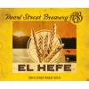
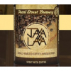
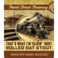
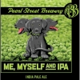
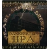
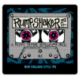
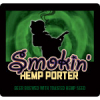
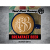

Year Round
D.T.B. Brown Ale
American Brown Ale
Soft toasted malt, gentle nut and chocolate. The flagship that put Pearl Street on the national map.
5.0% ABV
Gold 2003 + 2012
On Tap
Year-round flagships. Rotating IPAs. Stouts, lagers, and seasonals that show up when they show up.
Year Round
American Brown Ale
Soft toasted malt, gentle nut and chocolate. The flagship that put Pearl Street on the national map.

Year Round
American Pale Ale
Bright Cascade hop and a clean malt finish. The benchmark pale, and the one we pour for friends.

Year Round · IPA
India Pale Ale
Citra and Mosaic forward, juicy and bright, with just enough bite. Our most-grabbed six-pack.

Year Round · Lager
American Light Lager
Local malt, fresh ingredients, unpasteurized. A craft light lager that earned the name on purpose.

Year Round · Wheat
Bavarian Hefeweizen
Banana and clove from a true German wheat yeast. Hazy by design, refreshing by intention.

Year Round · Stout
Coffee Stout
Roasted malt and a generous pour of cold-brewed local coffee. Built for slow weekends.

Year Round · Stout
Organic Rolled Oat Stout
Smooth, silky, fully organic. Rolled oats give it the body, the malt does the rest.

Rotating · IPA
India Pale Ale
A crushable IPA built for solo evenings on the porch. Pine, citrus, and a clean finish.

Rotating · IPA
Imperial IPA
Big, dank, hop-forward. A monster of an IPA stitched together from our favorite resinous parts.

Rotating · IPA
New England IPA
Hazy, juicy, soft on the palate. Built around the hops that make modern IPAs go.

Rotating · Porter
Smoked Porter
Toasted malt, a wisp of campfire smoke, and a touch of hemp seed for body. Strange and beloved.

Rotating · Stout
Breakfast Stout
Coffee, oats, and the kind of body that makes Saturday mornings honest. Limited release.
Plus a rotating list of seasonal one-offs and experiments we pour straight from the bar. The full draft list lives on the chalkboard inside.
Find Our Beer
The full draft lineup pours daily inside the boot factory. Cans and bottles of our flagships sit on the shelf at every Woodman's in the state.
Visit the Taproom